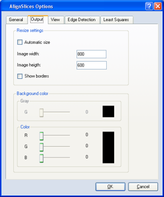
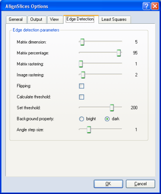
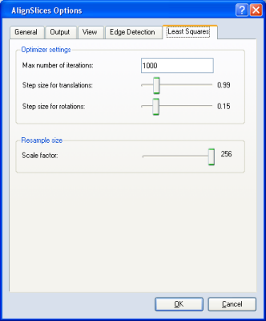

- Zoom In: Increases the magnification factor of the image.
- Zoom Out: Decreases the magnification factor of the image.
- Red/Green: If this option is set, the two images are displayed
in magenta and green, respectively. If both images match perfectly, a
gray image is obtained. Color images are first converted to grayscale
and then transformed to magenta and green.
- Checkerboard: If this option is set, one image is displayed
in the white parts of a checkerboard pattern while the other image is
displayed in the black parts. The size of the parts can be adjusted
in the Options dialog (see below).
- Average: If this option is set the, two images are averaged or
blended in the viewer window.
- Invert: If this option is set, the lower image is inverted. The
inverted image is then blended with the upper image. If both images
match perfectly, a constant gray image is obtained. This option is the
default.
- Transform parameters: If enabled, an additional toolbar is added
which displays the transformation and flip state of the currently editable slice.
- Coronal view: If enabled, displays a coronal view of the data
and a toolbar for controlling the displayed slice number and its zoom factor.
Sagittal view: If enabled, displays a sagittal view of the data
and a toolbar for controlling the displayed slice number and its zoom factor.
If either or both of these views are enabled, an additional toolbar is displayed.
Two text fields allow you to specify the min and max Z values of interest.
Activate the Auto update toggle for the orthogonal views to be automatically
updated each time you change a slice in the main align window. Press the
Update button to request an explicit update.
- Undo: This menu provides an undo feature that undoes the last
operation. Successive invocation of Undo is possible, allowing several
operations to be undone. Each operation made manually or automatically (translation,
rotation, automatic alignment, landmarks editing) can be undone.
The maximum number of operations that can be undone is 100.
- Redo: This menu provides a redo feature that redoes the last
undone operation. Successive invocation of Redo is possible after
several undo operations.
- Reset all: Set the translations on X and Y and the rotation to 0
for all slices.
- Reset: Set the translations on X and Y and the rotation to 0 for
the current slice (the slice that is currently editable).
- Transform all:
This is a toggle option.
If the option is ON, the transformations made for the editable slice are
also made for all slices above when the editable slice is the upper one.
That means that the existing alignment of all other slices not
involved in the current transformation will be preserved.
- Fix reference: This option decides if a certain slice is used as
a reference slice during the entire alignment procedure. The reference slice
is marked by a red tag in the Slice slider. The other slices will be
aligned according to this slice.
- Read transformation: Reads the AlignTransform and
AlignPoints parameters from the input data and sets the transformation
values accordingly. This is useful to return to a previous saved alignment.
This can be seen as another kind of reset or undo.
- Save transformation: Save the actual translations, rotations, and
landmarks as parameters in the input data.
This menu offers several alignment algorithms that can be selected in order to
obtain the best alignment. The performance of each algorithm is dependent
on the data to be aligned. There are four alignment algorithms that
can be chosen:
- Gravity centers: Align gravity centers and principal axes
- Gray values: Least squares algorithm based on gray values
- Landmarks: Align user-defined sets of landmarks
- Edge detection: Align the outer bounds of the objects
In addition, this menu allows you to specify which slices to align,
as follows:
- Align current pair: Align just the current two slices
- Align all slices: Align all slices
Finally, the Options button of the Align menu opens a tabbed
dialog window allowing you to define
a variety of alignment-related options. Each tab will be handled separately
below. The tabs are: General, Output, View, Edge Detection,
and Least Squares.
- Allow rotation in automatic alignment: If this option is checked, rotations are
considered during the alignment process. By default this option is
checked. Translations are always considered.
The Output dialog allows the user to give the output images of the image stack a
different size than the input images. This is especially useful if the slices are
rotated or moved during the alignment procedure and some areas of single slices are outside
the borders of the image stack. Beside this, a background color for the new areas in the image
can be determined. The following image shows the dialog box.

Figure 2:
The Output options window.
The following parameters can be set using this dialog:
- Automatic size: If this feature is activated, a minimal image size is calculated which contains all
pixels of all slices. The dimensions and the position of the new bounding box
are set such that all slices fit in this new bounding box.
- Image width: Sets the width of the output image.
- Image height: Sets the height of the output image.
- Show borders: Shows the new image borders of the output image in the Slice Aligner.
- Background color: The user can set the background color for the output image. The color
can be set as a gray value or as an RGB color, depending on the type of the input image. The current
background color is depicted in the box to the right.
- Size of checkerboard: Adjusts the size of the pattern if view
mode is set to checkerboard.

Figure 3:
The Edge detection options window.
The parameters for the Edge detection algorithm can be set using this dialog:
- Matrix dimension: This is the dimension of the matrix which scans the image and
decides whether a pixel belongs to the object or the background.
- Matrix percentage: This percentage defines the amount of pixels in the surrounding of a
pixel which have to belong to the object to indicate that this pixel belongs likewise to the object.
The considered surrounding is defined by the matrix dimension.
- Matrix rastering: This indicates if the surrounding should be rasterized. If so, the alignment
is done in a shorter time.
- Image rastering This decides if the image should be downsampled during the alignment procedure.
This speeds up the alignment.
- Flipping: This option indicates if a possible flipping of the images should be considered.
- Calculate threshold: This activates an automatic calculation of the threshold.
- Set threshold: This allows the threshold to be set manually.
- Background property: This must be set to describe the background of the image. According to this
setting, the threshold is interpreted as an upper or a lower boundary of gray values which separate the
object from the background.
- Angle stepsize: This sets the size of the search algorithm's angular steps (in degrees). A
higher value speeds up alignment at the cost of accuracy.

Figure 4:
The Least squares options window.
The following parameters for the gray values algorithm can be set using this dialog:
- Max number of iterations: This is only intended to prevent an
infinite loop.
- Step size for translations: The step size used to search for
better positions in X and Y. A small step size, though in general may
lead to more accurate results, also slows down alignment.
- Step size for rotations: The step size used for rotations.
- Scale factor: During the alignment procedure, the image can be
downsampled for the first iterationsteps so that a better result
can be reached in a shorter time.
More information about the align methods and the appropriate settings for the methods can be found in the alignment section.
The buttons of this menu are only active if Edit
landmarks mode is selected. The buttons have the following meaning:
- Add: set the shape of the mouse cursor to a black landmark and
clicking on the slice a new landmark is created.
- Remove: delete the selected landmark. This menu item is active
only when a landmark is selected and the number of landmarks is greater
than 3.
{kind=link}
{kind=link}
{kind=link}